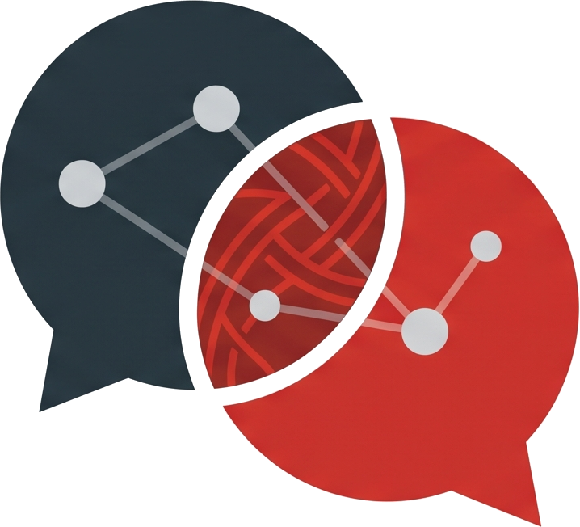

3回シリーズ 無料Webセミナー 第2回 ／ 2026年9月20日（日）21:00〜21:45
ChatGPT、去年の使い方のままになっていませんか。
同じことを聞いたのに、
昨日と違う答えが返ってくる。
原因は、たいてい指示文ではありません。
もっと手前にあります。
清水 幸久（Yukisa）AI・ITよろず相談所
Google Meet 参加無料 各回45分

AI・ITよろず相談所Recap
前回の振り返り ／ 今日が本番です
01
速い方と、考えさせる方
答えがだいたい決まっているなら速い方。一緒に探してほしいなら、入力欄の横の「思考」で考えさせる方。
02
書き方も変わった
「あなたは〇〇のプロです」より、誰が読むか・どうなれば完成か・確かめてほしい所を書く。
03
「忘れる」は2種類
1つのチャットの中で忘れる／チャットをまたぐと忘れる。今日は2つ目を、置き場所で解決します。
今日が初めての方も大丈夫です。前回を見ていなくても、今日だけで完結します。
AI・ITよろず相談所 ／ 清水幸久
2 / 16
AI・ITよろず相談所
第2回 ／ 2026.09.20
Agenda
今日の45分
| 時間 | 内容 |
|---|---|
| 0〜7分 | なぜ揺らぐのか。原因を3つに分ける |
| 7〜17分 | 【デモ①】型なし／型あり、並べて実行 |
| 17〜27分 | 【デモ②】毎回いちから説明するのを、やめる（カスタム指示とプロジェクト） |
| 27〜37分 | よくある残念な指示文を、その場で直します |
| 37〜45分 | 質問タイム・次回予告 |
見ているだけで大丈夫です。ご質問はチャット欄にどうぞ。最後にまとめてお答えします。
AI・ITよろず相談所 ／ 清水幸久
3 / 16
AI・ITよろず相談所
第2回 ／ 2026.09.20
Premise
こういうこと、ありませんか
昨日はちゃんとした答えが返ってきた。
同じことを聞いたのに、今日は的外れ。
同じことを聞いたのに、今日は的外れ。
自分は何も変えていない。──こうなると、たいていの方は「AIってそういうものだな」と思って、使うのをやめてしまいます。これがすごくもったいない。原因ははっきりしていて、しかも直せます。
AI・ITよろず相談所 ／ 清水幸久
4 / 16
AI・ITよろず相談所
第2回 ／ 2026.09.20
Cause
揺らぐ原因は、3つしかありません
01
前提が渡っていない
あなたの頭の中にはあるが、書いていない。いちばん多い原因です。AIは書いていないことを知りません。
02
出してほしい形を言っていない
長さ・形式・読み手。指定しなければ、毎回変わります。当たり前です。
03
新しい会話で、いちから始めている
毎回まっさらな相手に話しかけているのと同じ状態です。前回の「チャットをまたぐと忘れる」です。これが実は曲者です。
前半のデモで①と②を、後半のデモで③を扱います。
AI・ITよろず相談所 ／ 清水幸久
5 / 16
AI・ITよろず相談所
第2回 ／ 2026.09.20
Goal
今日、持って帰るものは1つだけです
自分の仕事用の指示文が、
1本、手元にできている。
1本、手元にできている。
理屈を分かって帰るのではなく、モノを持って帰っていただきます。明日からそのままコピーして使える形です。メモを取る準備をしておいてください。メモアプリでもチャット欄でも構いません。
AI・ITよろず相談所 ／ 清水幸久
6 / 16
AI・ITよろず相談所
第2回 ／ 2026.09.20
LIVE DEMO
型なし／型あり、並べて実行
ブラウザを2つ並べます。左が型なし、右が型あり。まったく同じ依頼を、同時に投げます。
山場は「型なしを、もう一度そのまま投げる」ところです。私は何も変えていないのに、違う答えが返ってきます。
AI・ITよろず相談所 ／ 清水幸久
7 / 16
AI・ITよろず相談所
第2回 ／ 2026.09.20
Template
指示の型 — 3つ書くだけ
前回お見せした「いまの書き方」と同じです。役割の一文は、もう要りません。
コピーして、空欄を埋めてください
以下の〔 〕をもとに、〔 〕を作ってください。【ここに材料を貼る】
背景： ← ① 誰が読むか・何に使うか
・読み手は〔 〕です ・〔 〕に使います
以下の形で出してください： ← ② どうなれば完成か
・〔 〕 ・全体で〔 〕字程度
確かめてほしい所： ← ③ 確かめてほしい所・あいまいな所の扱い
・〔 〕は必ず確認する ・資料から判断できない点は「※要確認」として最後に分ける
①の背景は、独り言みたいに書いて大丈夫です。「部長に出す。細かいことにうるさい人。3分で読み終わる長さで」──これで十分伝わります。
AI・ITよろず相談所 ／ 清水幸久
8 / 16
AI・ITよろず相談所
第2回 ／ 2026.09.20
LIVE DEMO
毎回いちから説明するのを、やめる
指示文を工夫するより、こちらの方が効きます。置き場所は2つ。カスタム指示とプロジェクトです。
一度置いておけば、次からは書かなくていい。毎回の指示文が、ぐっと短くなります。
AI・ITよろず相談所 ／ 清水幸久
9 / 16
AI・ITよろず相談所
第2回 ／ 2026.09.20
Setup
カスタム指示に置く前提 — 3〜5行で十分
置き場所は 設定 → パーソナライズ → カスタム指示。長く書きすぎない方が、うまくいきます。
| 書くこと | 例 |
|---|---|
| ① 自分の仕事 | 建設資材メーカーの営業事務です |
| ② よく出す相手 | 社内向けが多い。上司は簡潔な文章を好む |
| ③ いつもの形 | 結論から書く。箇条書き中心。長くて800字 |
| ④ やってほしくないこと | 大げさな表現は使わない。カタカナ語を減らす |
いちばん効くのは④「やってほしくないこと」です。この一行だけで、返ってくる文章が自分の言葉に近づきます。
置いた前提は、その場で上書きできます。「これは社外向けです。今回だけ丁寧な文体で」と書けば、そちらが優先されます。縛られるわけではありません。
AI・ITよろず相談所 ／ 清水幸久
10 / 16
AI・ITよろず相談所
第2回 ／ 2026.09.20
Where
カスタム指示と、プロジェクトの指示
前回「次回くわしく」とお伝えした使い分けです。
| カスタム指示 | プロジェクトの指示 | |
|---|---|---|
| どこにある | 設定 → パーソナライズ → カスタム指示 | サイドバーの「新しいプロジェクト」→ 作ったプロジェクトの設定（歯車）→ 指示 |
| 効く範囲 | すべてのチャット | そのプロジェクトの中だけ |
| 書くこと | 自分のこと（仕事・よく出す相手・やってほしくないこと） | この仕事の型（読み手・完成の形・確かめてほしい所） |
| 例 | 建設資材メーカーの営業事務。結論から、簡潔に | 「報告書」プロジェクト：部長向け。結論3行＋判断が必要な点3つ |
| ぶつかったら | — | プロジェクトの指示が優先 |
| 無料で | 使える | 使える（ファイルは1プロジェクト5個まで。Go・Plus 25個／Pro 40個） |
カスタム指示＝自分のこと。プロジェクトの指示＝この仕事の型。
出典：OpenAIヘルプ（プロジェクト）。2026年9月11日時点の情報です。
AI・ITよろず相談所 ／ 清水幸久
11 / 16
AI・ITよろず相談所
第2回 ／ 2026.09.20
Live
ここから10分、その場で直します
よくある残念な指示文を3本、
目の前で直します。
目の前で直します。
相談を受けていて、何度も見てきた形です。ご自分の指示文に似ていないか、見比べながらご覧ください。直す前と後を、両方実行してお見せします。
AI・ITよろず相談所 ／ 清水幸久
12 / 16
AI・ITよろず相談所
第2回 ／ 2026.09.20
Pattern
よくある直しどころ — よくあるのはこの5つ
1
読み手が書いていない
「上司に出す」の一言で、文体が変わります。「あなたは〇〇のプロです」を足すより効きます
2
長さを言っていない
「800字くらい」だけで、毎回の振れ幅が消えます
3
材料と指示が混ざっている
【ここから資料】【ここまで】と囲むだけで直ります
4
やってほしいことが混ざっている
考える・まとめる・清書を一度に頼むと、どこを直せばいいか分からなくなる。分けて頼めば途中で確かめられます
5
ダメ出しだけして、直し方を言っていない
「違う」ではなく「もっと短く」と方向を言う
AI・ITよろず相談所 ／ 清水幸久
13 / 16
AI・ITよろず相談所
第2回 ／ 2026.09.20
Take Away
持ち帰り ／ 今週やること ／ 次回
今週やること
前提を3〜5行、カスタム指示に置いてくる
さっきの4項目を、自分の言葉で書いて置いてください。10分あればできます。
1 自分の仕事を1行
2 よく出す相手を1行
3 いつもの形を1行
4 やってほしくないことを1行
同じ形の仕事が毎週あるなら、プロジェクトを1つ作って、今日の型を指示に入れる。
次回、それが効いている状態で来ていただくと話が早いです。
第3回 2026年9月27日（日）21:00〜21:45
「調べる・書く」は、もう卒業していい
「毎週この曜日にこれをやっておいて」を1本だけ作ります
当日、目の前で作って、実際に動くところまで
いくつもの手順を、一度の依頼でまとめて渡す
最後に、コードを書かずに自分用の道具を作る話も
今日の要点はひとつです。指示文を工夫するより、前提を置いておく方が効く。
AI・ITよろず相談所 ／ 清水幸久
14 / 16
AI・ITよろず相談所
第2回 ／ 2026.09.20
Q & A
質問タイム
チャット欄でも、マイクでも構いません。
今日の直し方で、
気になったところを聞いてください。
気になったところを聞いてください。
ご自分の指示文を見せていただく必要はありません。「こういう場合はどう書けばいい？」という聞き方で十分です。
AI・ITよろず相談所 ／ 清水幸久
15 / 16
AI・ITよろず相談所
第2回 ／ 2026.09.20
Thank You
アンケートのお願い ／ ご連絡先
本日はありがとうございました。次回は9月27日（日）21:00〜、最終回です。
アンケート（1〜2分）
お名前（ニックネーム可）を入れる欄を作りました。次回からのご案内で、お名前でお呼びできます。
次のシリーズの内容は、ここに書かれたことで決まります。
![アンケートのQRコード]()
AI・ITよろず相談所 清水 幸久（Yukisa）
無料相談（30分・オンライン）予約フォームへ
X（ほぼ毎日発信中）@Yorozu0519
note（AI活用マガジン）note.com/yukisa0814
YouTube（過去シリーズの録画）YouTubeチャンネル
Facebookページページを見る
AI・ITよろず相談所 ／ 清水幸久
16 / 16
← → キー、または左右のボタンで移動 ／ F でフルスクリーン